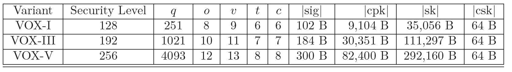

VOX is family a post-quantum signature algorithms submitted to NIST Post-Quantum Cryptography Project on May 31th, 2023. It has been designed by: Benoît Cogliati, Jean-Charles Faugère, Pierre-Alain Fouque, Louis Goubin, Robin Larrieu, Gilles Macario-Rat, Brice Minaud and Jacques Patarin.
VOX is based on multivariate cryptography (UOV problem and the problem of solving algebraic equations).
VOX is a UOV-based hash-and-sign signature scheme from the Multivariate Quadratic (MQ) family. In order to reduce the size of the public key, we use a new variant proposed by Faugère, Macario-Rat, Patarin, and Perret under the name UOVˆ+ and the QR (Quotient Ring) technique introduced by Furue, Ikematsu, Kiyomura, and Takagi at ASIACRYPT 2021. The UOVˆ+ has an interesting security property. The quadratic forms of a UOV public key have a large common isotropic subspace, which is unusual for a random quadratic system. UOVˆ+ adds a small number of random quadratic forms to the public keys to hide this subspace. This makes the signing process more complex since we have to solve a small quadratic system, but also allows us to reduce the public key of UOV for equivalent security.
Hence, the size of the signature is only 102 bytes for VOX-I with 128 bits of security for public key size 9.1Kbytes. The verification time is very good and we can sign 3700 messages per second if the secret key is decompressed.
We define the parameters for each variant of VOX according to the three security levels defined by the NIST.
The size of the signature (|sig|), the public key (|cpk|), the secret key (|sk|) and the compressed secret key (|csk|) are expressed in bytes.
Using the reference implementation on a common laptop computer (11th Gen Intel(R) Core(TM) i7-1185G7 @ 3.00GHz , TurboBoost enabled), VOX achieves the following performance:
| Level | Keygen | Sign | Sign [cached SK] | Verify | Verify [cached PK] |
|---|---|---|---|---|---|
| VOX-128 | 1.30ms / 2350064 c | 0.38ms / 679237 c | 0.29ms / 517285 c | 0.22ms / 396311 c | 0.07ms / 134240 c |
| VOX-192 | 5.17ms / 9334246 c | 1.63ms / 2937318 c | 1.14ms / 2061593 c | 0.86ms / 1548342 c | 0.27ms / 486889 c |
| VOX-256 | 14.46ms / 26097363 c | 7.33ms / 13226130 c | 5.41ms / 9772441 c | 2.07ms / 3734592 c | 0.65ms / 1180465 c |
All the timings are given in milliseconds (ms) and in cycles (c)
Using AVX2 implementation on a common laptop computer (11th Gen Intel(R) Core(TM) i7-1185G7 @ 3.00GHz , TurboBoost enabled), VOX achieves the following performance:
| Level | Keygen | Sign | Sign [cached SK] | Verify | Verify [cached PK] |
|---|---|---|---|---|---|
| VOX-128 | 0.39ms / 707796 c | 0.37ms / 664265 c | 0.27ms / 488308 c | 0.09ms / 168567 c | 0.02ms / 44085 c |
| VOX-192 | 2.22ms / 4006402 c | 1.50ms / 2709851 c | 1.05ms / 1887598 c | 0.40ms / 713968 c | 0.08ms / 141778 c |
| VOX-256 | 7.14ms /12893376 c | 6.71ms / 12110394 cc | 4.93ms / 8902607 c | 0.88ms / 1585504 c | 0.14ms / 259305 c |
All the timings are given in milliseconds (ms) and in cycles (c)
The verification time is very good and we can sign 3700 messages per second if the secret key is decompressed and 2700 otherwise.
(Version 2023-07-28): .
(Version 2023-05-31): .